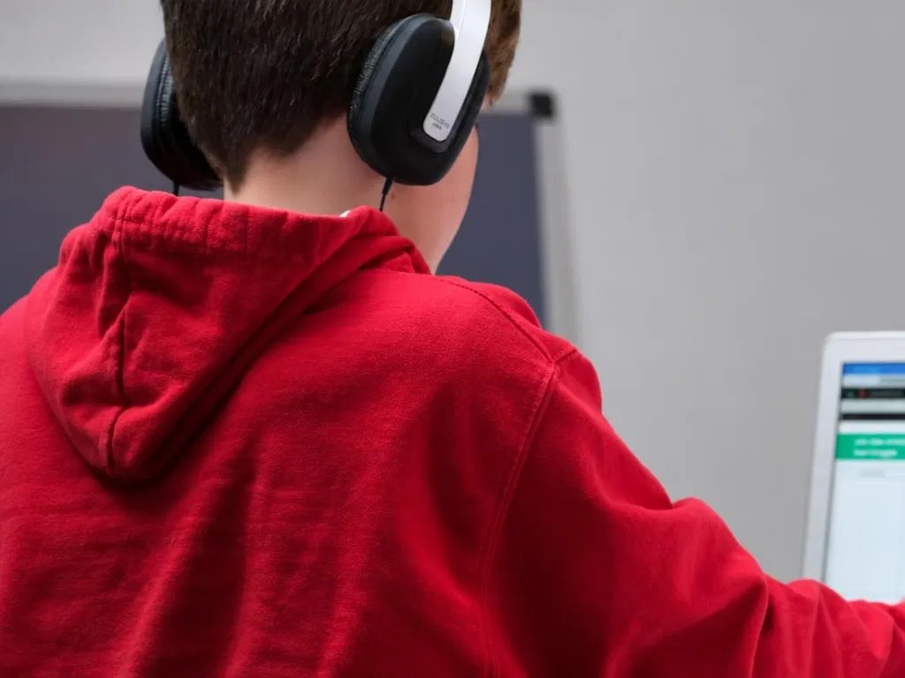

Tem um computador parado?
Doe e transforme a rotina de um estudante.
Quero doarREAPROVEITAR PARA INCLUIR
Aquele computador guardado no armário, o notebook esquecido na gaveta ou a máquina que ficou para trás depois de uma troca podem mudar a vida de um estudante com deficiência.

+ de 1.200 computadores doados
No Brasil, milhões de pessoas com deficiência ainda encontram barreiras para estudar, se comunicar e trabalhar, muitas vezes porque não têm acesso a um computador preparado para elas. Ao mesmo tempo, toneladas de equipamentos eletrônicos são descartadas todos os anos, quando ainda poderiam funcionar por muito tempo. A ReciclaTech une essas duas pontas. Recolhemos computadores que não estão mais em uso, recuperamos cada um deles e instalamos recursos de acessibilidade, como leitor de tela, ampliação de tela, tradução para Libras e teclado adaptado. Depois, doamos esses equipamentos para escolas públicas.
O que para você está parado, para alguém pode ser o começo de tudo.
Você doa o equipamento em um ponto de coleta ou agenda a retirada.
Nossos técnicos avaliam o que pode ser consertado, reaproveitado ou reciclado.
Apagamos seus dados com segurança e trocamos as peças gastas.
Instalamos leitor de tela, lupa, Libras e adaptações no teclado.
O computador chega a uma escola pública, e os professores são capacitados.
1.240
computadores adaptados e doados
860
estudantes com deficiência atendidos
38
escolas públicas beneficiadas
12,5 t
de lixo eletrônico que não foram para o aterro
Doe e transforme a rotina de um estudante.
Quero doarSeja voluntário na coleta, na oficina ou nas aulas.
Quero ser voluntário